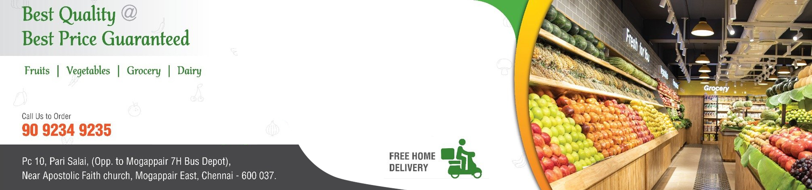

Chennai’s best food and grocery store

In 2021, as the Covid pandemic began to retreat, Karthik Annamalai returned to Chennai, inspired by his studies in Finance and Entrepreneurship in the US and UK. A pivotal conversation with his father, Annamalai T—a respected figure in Tamil Nadu’s food and grocery retail sector—sparked a shared vision for a modern supermarket chain focused on fresh produce and exceptional customer experience.
Annamalai T, COO and Director of Kovai Pazhamudir Nilayam (KPN), had been integral to its growth from a single pushcart to over 80 stores across Tamil Nadu. Meanwhile, Karthik’s interest in retail deepened during his time abroad, where he became captivated by the vibrant store environments. Upon his return, he identified a gap in the local market, realizing that Chennai’s grocery stores lacked the quality and service found in international supermarkets.
This synergy led to a joint decision to launch a new retail venture, emphasizing fresh fruits, vegetables, and essential food products. Karthik’s brother, Thiagaraja Annamalai, had already begun his own journey in the sector, establishing a B2B business supplying produce to local stores, inspired by innovative companies like Ninjacart and WayCool.
With a rich family legacy in business and a commitment to quality and innovation, the Annamalai family is poised to transform Chennai’s grocery landscape, creating a groundbreaking retail experience rooted in their passion for fresh produce.
Within a year, Fresh2day expanded to three locations, and the venture gained further momentum with the addition of Karthik’s brother, Thiagaraja. Fast forward three years, and Fresh2day now operates 24 stores across Chennai, encompassing around 50,000 sq. ft. of retail space.
Fresh2day aspires to set the standard as a leading omnichannel food retailer in India, delivering the freshest produce tailored to evolving consumer needs. “We advocate for healthy lifestyles and authentic local flavors while empowering our dedicated employees with cutting-edge technology to enhance their skills,” he adds.
Three years after launching its first store, Fresh2day is making significant strides in Chennai’s retail sector, operating 24 locations—17 company-owned and 7 franchised. The brand is strategically focused on expansion, with plans to convert more stores into franchise-invested, company-operated locations. On a typical day, Fresh2day welcomes around 500-600 shoppers, primarily from the Sec A, B, and B+ demographics, who seek quality and convenience for their daily food needs. Each store is staffed by a dedicated team of 18 to 20 employees, fostering a welcoming environment. The workforce reflects diversity, with a gender ratio of 40% female to 60% male, promoting inclusivity within the team.
With an average store size of 2,200 square feet, Fresh2day effectively creates a comfortable shopping experience. This blend of company-operated and franchise stores, combined with a clear vision for future growth, positions Fresh2day as a dynamic player in Chennai’s retail landscape. Location is key to their strategy; Thiagaraja, one of the Directors, emphasizes a focus not only on premium areas but also on above-middle-class neighborhoods. While current stores are located in some of Chennai’s most sought-after locales, there’s a clear intention to expand into B+ areas.
Karthik, the other Director, adds depth to this strategy by acknowledging the need for a nuanced pricing approach as the brand grows. “We can’t enter different communities with the same pricing strategy,” he notes, understanding that perceptions of affordability vary widely. This thoughtful approach reflects Fresh2day’s commitment to inclusivity, aiming to provide high-quality products to a broader demographic beyond the affluent. By balancing location and pricing strategy, Fresh2day is poised to create a shopping experience that resonates with a diverse range of customers.
Copyright © 2024 Fresh2Day All rights reserved..


Powered by Rodeo Digital.